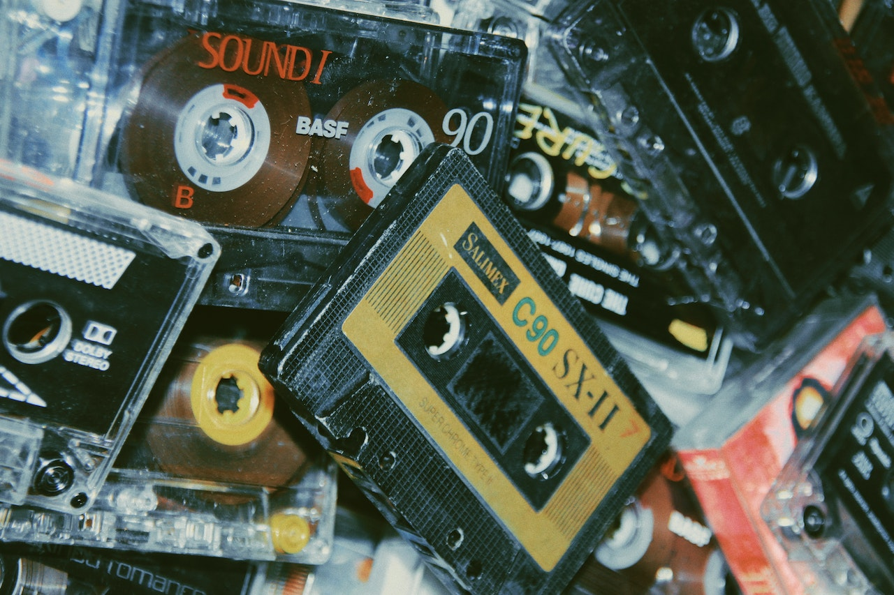

Nostalgia Wave
Bem-vindo ao Nostalgia Wave, o seu portal para uma jornada nostálgica através das décadas de 80 e 90. Prepare-se para mergulhar em uma época de fitas cassete, VHS, jogos de arcade e as icônicas roupas e músicas que definiram uma geração.
Neste espaço dedicado à nostalgia, exploraremos as tendências, os objetos, os carros e até mesmo os eventos históricos que moldaram as décadas de 80 e 90. Você encontrará informações detalhadas sobre os carros clássicos da época, as músicas que dominavam as paradas, os filmes que marcaram o cinema e as inovações tecnológicas que revolucionaram o mundo.
Embarque nesta máquina do tempo virtual enquanto revivemos momentos memoráveis e celebramos o passado. É hora de se perder nas memórias e lembrar por que essas décadas foram tão especiais. Então, aperte o cinto, ajuste o seu Walkman e vamos começar esta incrível viagem ao passado!
